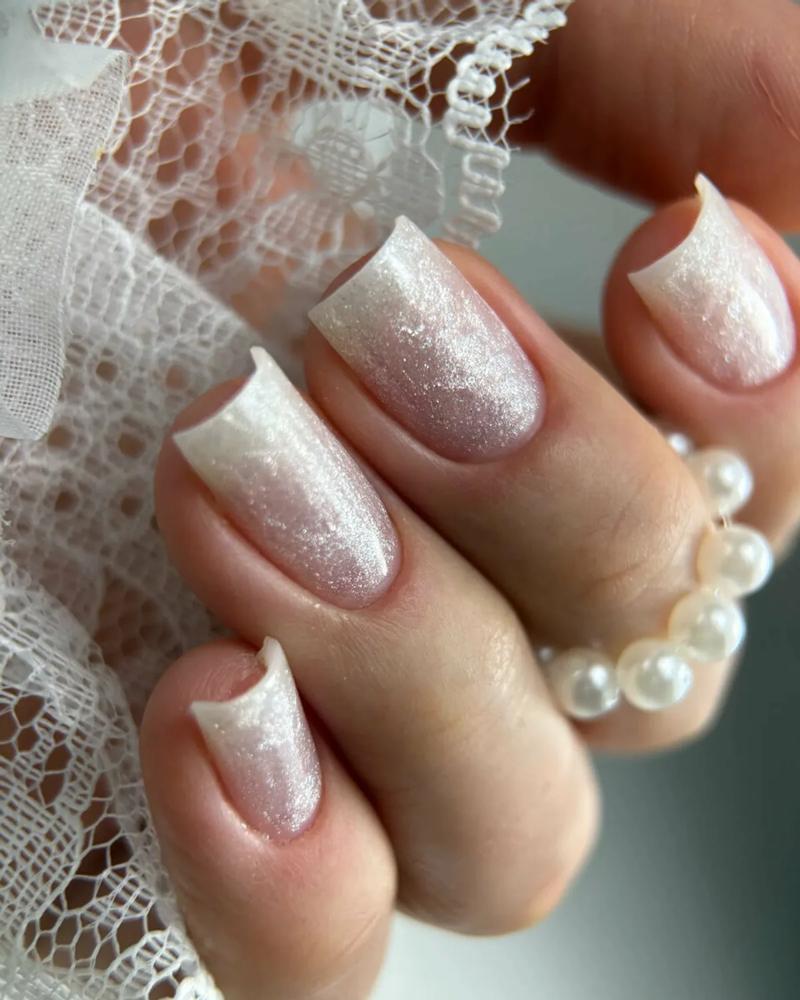
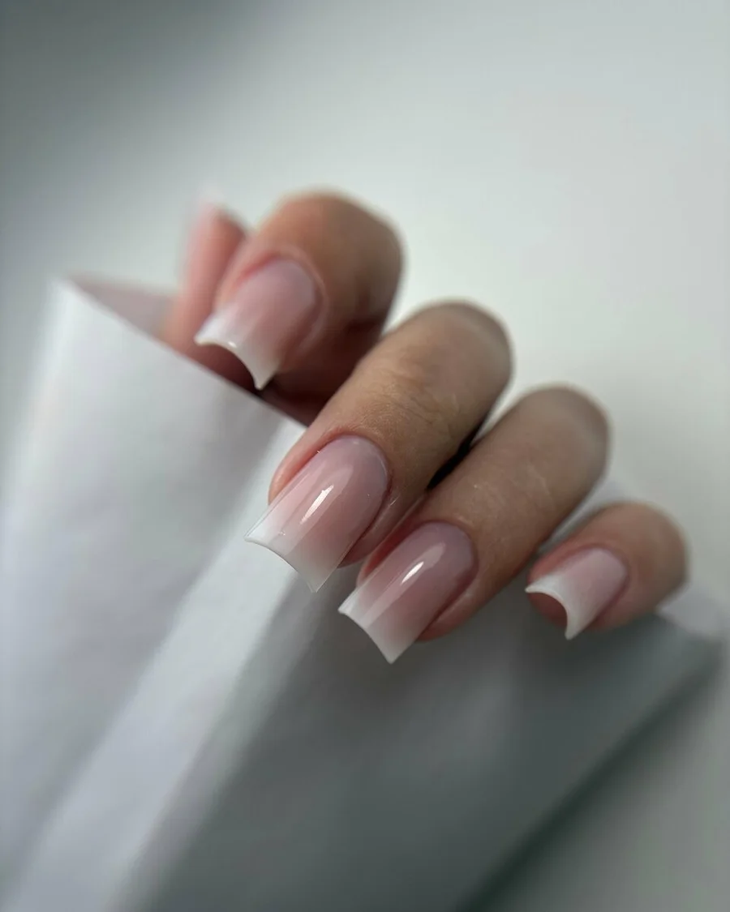
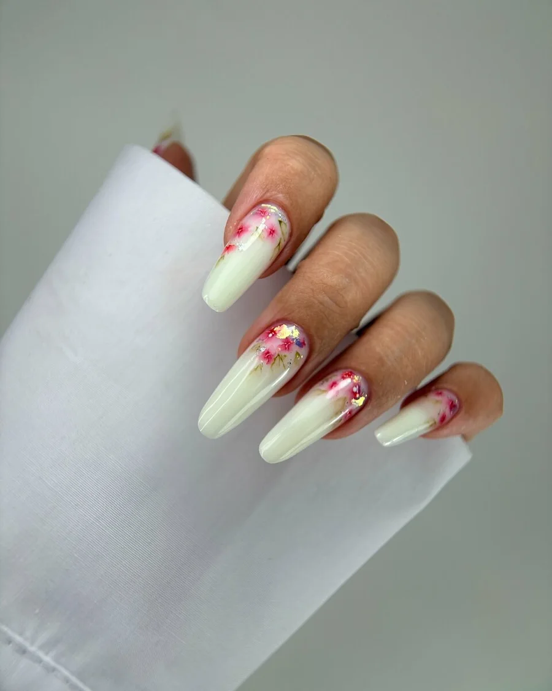
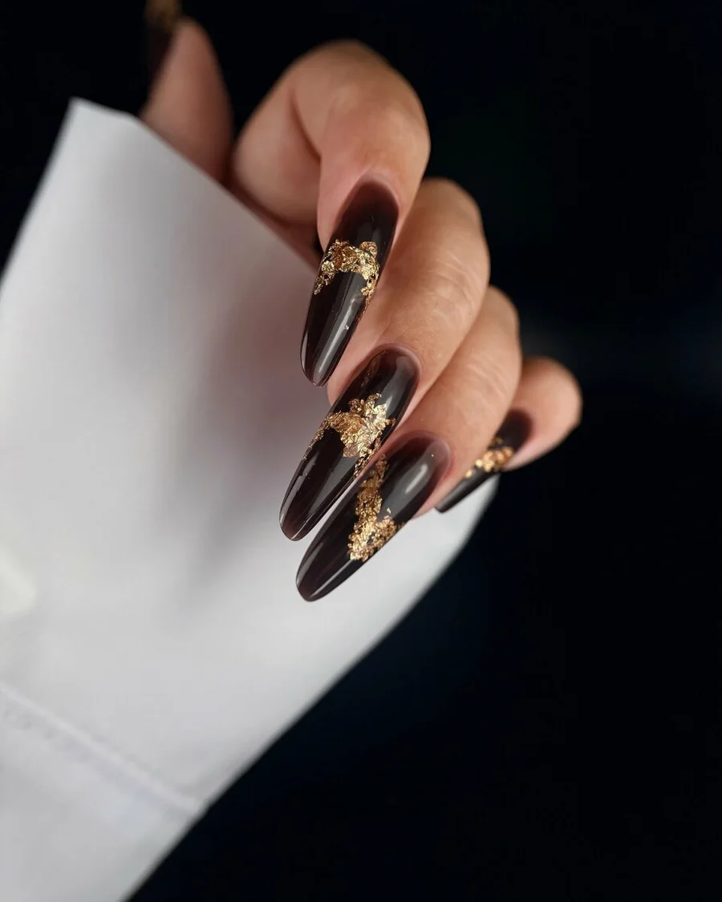

Ногтевая студия · Глазов
Маникюр и педикюр в Глазове – цены до записи
Укрепление гелем, выкладной френч и SMART-педикюр. Прайс студии на одной странице, с описанием каждой услуги.

- Прайс от самой студии
- 4,5 на Яндекс.Картах
- Предварительная запись
Услуги и цены
Цены с карточки студии, их обновил владелец 25 июля. Актуальные назовёт мастер при записи.
Маникюр
- Премиум-маникюр с укреплениемУкрепление жёстким гелем1 700 ₽
- Моделирование и укрепление на верхние формыСкрученные, взлётные, повреждённые ногти2 300 ₽
- Эксклюзивный выкладной френчМоделируется вручную из цветных и прозрачных гелей3 500 ₽
Педикюр
- Эстетичный SMART-педикюрСпециальные диски вместо тёрок1 200 ₽
Описания услуг взяты с карточки, там же указано: «Представитель организации». Это часть прайса студии, цены уточняйте у мастера.
Как записаться
- 01
Выбираете услугу
Цена каждой названа в прайсе выше.
- 02
Звоните или пишете во ВКонтакте
Запись предварительная: время согласуете заранее.
- 03
Время по графику студии
Работаем с понедельника по пятницу, 11:00–19:00.
- 04
Приходите на Первомайскую, 1
Цокольный этаж. Есть парковка, Wi-Fi и туалет.



Что важно знать
Цены видны до записи
Четыре услуги с ценами и описанием – в прайсе на странице.
Свои техники
Укрепление жёстким гелем, выкладной френч, SMART-педикюр.
Удобная оплата
Наличными и банковским переводом. Есть подарочный сертификат.
Работает мастер Дарья
Так пишут клиентки в отзывах на Яндекс.Картах.
Отзывы с Яндекс.Карт
«Прекрасный мастер! Идеальное выравнивание, тонкое и стойкое покрытие. Работа выполнена очень чисто и аккуратно. Огромное спасибо Даше! Однозначно 5 звёзд.»
Наталья Кукушкина · 14 сентября
«Дарья - отличный мастер! Работа выполнена профессионально и при этом очень быстро, что для меня огромный плюс) Качество на высоте, покрытие ровное, форма подобрана идеально, уже неделю относила и все прекрасно. Отдельно отмечу, что стоимость приятно порадовала. Рекомендую»
Илана И. · 18 августа
«Недавно ходила к Даше на маникюр. Очень довольна результатом! Ноготки аккуратные, красивые, мастер внимательный и приятный. Всё сделано качественно, обязательно приду ещё!»
Аня П. · 21 июля
Отзывы с карточки на Яндекс.Картах.
Контакты
- Адрес
- Первомайская ул., 1, цокольный этаж, Глазов
- Часы
- Пн–Пт 11:00–19:00 · Сб, Вс выходной
- Телефон
- +7 (912) 024-92-15